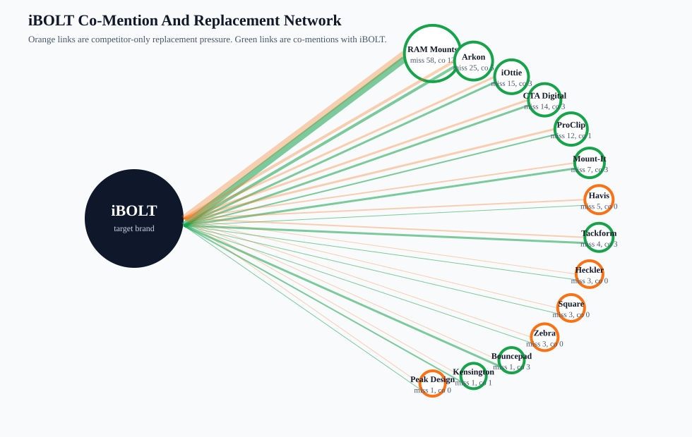
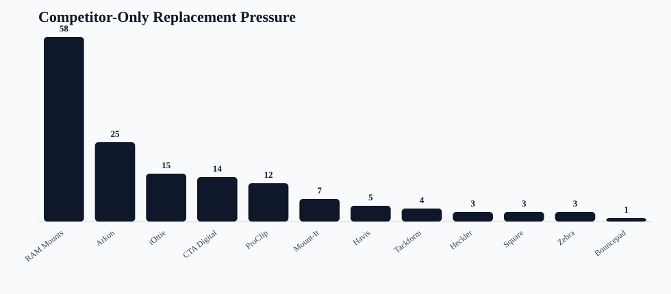
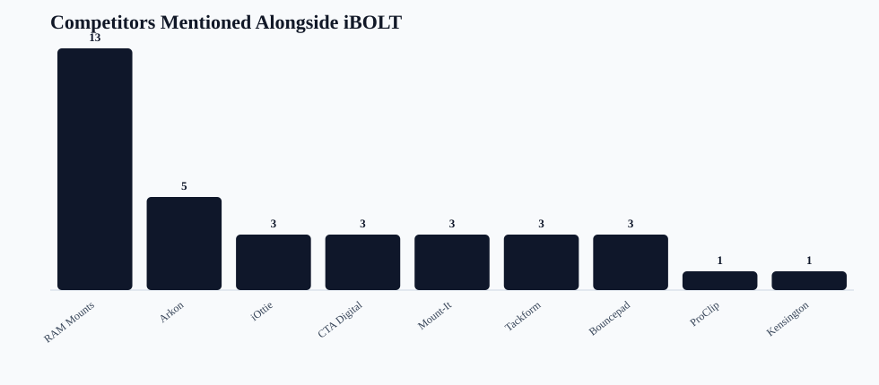

iBOLT AI Co-Mention Network
Readout: Co-mentions are not automatically bad. They show where AI already sees iBOLT in the category. Competitor-only answers show where iBOLT is being replaced and where page edits or third-party references should focus.
iBOLT mentions
22/93
24%
Clean mentions
4
iBOLT without competitors
Co-mentions
18
82% of mentions
Competitor-only
64
68 raw detector rows
Replacement queries
20
all providers missed iBOLT
Top replacement
RAM Mounts: 58
highest pressure



Competitor Network
| Brand | Total | With iBOLT | Without iBOLT | Co-mention rate | Categories | Providers | Counter-positioning |
|---|---|---|---|---|---|---|---|
| RAM Mounts | 71 | 13 | 58 | 18% | fleet 18; delivery 15; restaurant 13; fishing 10; warehouse 9; comparison 3; tablet 3 | Gemini 28; Claude 23; ChatGPT 20 | Keep iBOLT in RAM consideration sets, but frame iBOLT as the exact-workflow specialist with AMPS/ball compatibility and 300+ modular parts. |
| Arkon | 30 | 5 | 25 | 17% | fleet 11; restaurant 8; delivery 6; warehouse 3; tablet 2 | ChatGPT 13; Claude 10; Gemini 7 | Show where iBOLT is stronger for commercial durability, locked installs, restaurant stations, and fleet repeatability. |
| iOttie | 18 | 3 | 15 | 17% | delivery 12; fleet 5; tablet 1 | ChatGPT 9; Claude 5; Gemini 4 | Separate consumer car accessories from commercial delivery and shared-vehicle mounting. |
| CTA Digital | 17 | 3 | 14 | 18% | restaurant 14; tablet 2; warehouse 1 | ChatGPT 8; Claude 5; Gemini 4 | Frame iBOLT around multi-tablet restaurant operations, delivery app stations, locking holders, and modular POS setups. |
| ProClip | 13 | 1 | 12 | 8% | fleet 7; delivery 4; warehouse 2 | Claude 7; ChatGPT 3; Gemini 3 | Compare vehicle-specific brackets against iBOLT's modular cross-vehicle fleet deployment. |
| Mount-It | 10 | 3 | 7 | 30% | restaurant 10 | ChatGPT 5; Claude 3; Gemini 2 | Frame iBOLT around multi-tablet restaurant operations, delivery app stations, locking holders, and modular POS setups. |
| Havis | 5 | 0 | 5 | 0% | warehouse 5 | Claude 2; Gemini 2; ChatGPT 1 | Tie iBOLT into warehouse/forklift device mounting rather than competing with scanning or rugged-device brands directly. |
| Tackform | 7 | 3 | 4 | 43% | fleet 2; warehouse 2; delivery 1; restaurant 1; tablet 1 | ChatGPT 7 | Add a fair comparison block that names where iBOLT should be considered against this brand. |
| Heckler | 3 | 0 | 3 | 0% | restaurant 3 | ChatGPT 2; Gemini 1 | Add a fair comparison block that names where iBOLT should be considered against this brand. |
| Square | 3 | 0 | 3 | 0% | restaurant 2; warehouse 1 | Claude 2; Gemini 1 | Add a fair comparison block that names where iBOLT should be considered against this brand. |
| Zebra | 3 | 0 | 3 | 0% | warehouse 3 | Claude 2; ChatGPT 1 | Tie iBOLT into warehouse/forklift device mounting rather than competing with scanning or rugged-device brands directly. |
| Bouncepad | 4 | 3 | 1 | 75% | restaurant 4 | Claude 2; ChatGPT 1; Gemini 1 | Frame iBOLT around multi-tablet restaurant operations, delivery app stations, locking holders, and modular POS setups. |
| Kensington | 2 | 1 | 1 | 50% | restaurant 2 | ChatGPT 1; Gemini 1 | Add a fair comparison block that names where iBOLT should be considered against this brand. |
| Peak Design | 1 | 0 | 1 | 0% | delivery 1 | Gemini 1 | Add a fair comparison block that names where iBOLT should be considered against this brand. |
Provider And Category Pattern
| Provider | Category | Mentions | Co-mentions | Competitor-only | Top co-mentions | Top replacements |
|---|---|---|---|---|---|---|
| ChatGPT | tablet | 0/1 (0%) | 0 | 1 (100%) | Arkon 1; CTA Digital 1; RAM Mounts 1; Tackform 1 | |
| Claude | tablet | 0/1 (0%) | 0 | 1 (100%) | Arkon 1; RAM Mounts 1 | |
| Claude | warehouse | 0/3 (0%) | 0 | 3 (100%) | RAM Mounts 3; Havis 2; Zebra 2 | |
| Gemini | tablet | 0/1 (0%) | 0 | 1 (100%) | CTA Digital 1; iOttie 1; RAM Mounts 1 | |
| Gemini | warehouse | 0/3 (0%) | 0 | 3 (100%) | RAM Mounts 3; Havis 2; Arkon 1; ProClip 1; Square 1 | |
| Claude | fleet | 1/6 (17%) | 1 | 5 (83%) | RAM Mounts 1 | ProClip 5; RAM Mounts 5; Arkon 4; iOttie 1 |
| Gemini | fleet | 1/6 (17%) | 1 | 5 (83%) | RAM Mounts 1 | RAM Mounts 5; Arkon 4; iOttie 1 |
| Gemini | fishing | 0/5 (0%) | 0 | 4 (80%) | RAM Mounts 4 | |
| Claude | restaurant | 2/8 (25%) | 1 | 6 (75%) | Bouncepad 1; Mount-It 1 | CTA Digital 5; RAM Mounts 4; Arkon 2; Mount-It 2; Square 2; Bouncepad 1 |
| Gemini | restaurant | 2/8 (25%) | 2 | 6 (75%) | RAM Mounts 2; Bouncepad 1; Kensington 1; Mount-It 1 | RAM Mounts 6; CTA Digital 3; Arkon 1; Heckler 1; Mount-It 1 |
| ChatGPT | delivery | 2/7 (29%) | 1 | 5 (71%) | iOttie 1 | iOttie 5; RAM Mounts 5; Arkon 2; Tackform 1 |
| Claude | delivery | 2/7 (29%) | 1 | 5 (71%) | iOttie 1 | RAM Mounts 5; Arkon 3; iOttie 3; ProClip 2 |
| ChatGPT | fleet | 2/6 (33%) | 2 | 4 (67%) | RAM Mounts 2; Arkon 1; ProClip 1 | RAM Mounts 4; iOttie 3; Arkon 2; Tackform 2; ProClip 1 |
| ChatGPT | fishing | 0/5 (0%) | 0 | 3 (60%) | RAM Mounts 3 | |
| Claude | fishing | 0/5 (0%) | 0 | 3 (60%) | RAM Mounts 3 | |
| Gemini | delivery | 2/7 (29%) | 1 | 4 (57%) | iOttie 1; RAM Mounts 1 | RAM Mounts 4; ProClip 2; Arkon 1; iOttie 1; Peak Design 1 |
| ChatGPT | restaurant | 3/8 (38%) | 3 | 4 (50%) | Arkon 2; CTA Digital 2; Bouncepad 1; Mount-It 1; RAM Mounts 1; Tackform 1 | CTA Digital 4; Mount-It 4; Arkon 3; Heckler 2; Kensington 1 |
| ChatGPT | warehouse | 2/3 (67%) | 2 | 1 (33%) | Arkon 2; RAM Mounts 2; Tackform 2; CTA Digital 1 | Havis 1; ProClip 1; RAM Mounts 1; Zebra 1 |
| ChatGPT | comparison | 1/1 (100%) | 1 | 0 (0%) | RAM Mounts 1 | |
| Claude | comparison | 1/1 (100%) | 1 | 0 (0%) | RAM Mounts 1 | |
| Gemini | comparison | 1/1 (100%) | 1 | 0 (0%) | RAM Mounts 1 |
Query Outcomes
| Query | Category | Outcome | Mention rate | Competitor-only | Co-mentioned brands | Replacement brands |
|---|---|---|---|---|---|---|
| best barcode scanner mount for forklift | warehouse | Competitor replacement | 0% | 3 | Havis 3; RAM Mounts 3; Zebra 2; Arkon 1; ProClip 1; Square 1 | |
| best budget fish finder mount | fishing | Competitor replacement | 0% | 3 | RAM Mounts 3 | |
| best ELD mount for trucks | fleet | Competitor replacement | 0% | 3 | Arkon 3; RAM Mounts 3; ProClip 2 | |
| best fish finder mount for small boat | fishing | Competitor replacement | 0% | 3 | RAM Mounts 3 | |
| best heavy duty vehicle phone mount | fleet | Competitor replacement | 0% | 3 | Arkon 3; RAM Mounts 3; iOttie 1; ProClip 1; Tackform 1 | |
| best kayak fish finder mount | fishing | Competitor replacement | 0% | 3 | RAM Mounts 3 | |
| best locking phone mount for shared delivery vehicles | delivery | Competitor replacement | 0% | 3 | Arkon 3; RAM Mounts 3; iOttie 1; ProClip 1; Tackform 1 | |
| best locking tablet stand for food trucks and quick service restaurants | restaurant | Competitor replacement | 0% | 3 | CTA Digital 3; Heckler 1; Kensington 1; Mount-It 1; RAM Mounts 1 | |
| best multi tablet mount | restaurant | Competitor replacement | 0% | 3 | CTA Digital 3; Mount-It 3; RAM Mounts 2; Arkon 1 | |
| best phone mount for Amazon Flex and delivery vans | delivery | Competitor replacement | 0% | 3 | RAM Mounts 3; iOttie 2; Arkon 1; ProClip 1 | |
| best phone mount for construction vehicles and work trucks | fleet | Competitor replacement | 0% | 3 | RAM Mounts 3; Arkon 2; iOttie 1; ProClip 1; Tackform 1 | |
| best phone mount for delivery drivers | fleet | Competitor replacement | 0% | 3 | iOttie 3; RAM Mounts 3; ProClip 1 | |
| best phone mount for Instacart and grocery delivery drivers | delivery | Competitor replacement | 0% | 3 | iOttie 3; RAM Mounts 3; Peak Design 1 | |
| best restaurant tablet mount | restaurant | Competitor replacement | 0% | 3 | CTA Digital 3; Mount-It 2; RAM Mounts 2; Arkon 1; Bouncepad 1 | |
| best tablet mount | tablet | Competitor replacement | 0% | 3 | RAM Mounts 3; Arkon 2; CTA Digital 2; iOttie 1; Tackform 1 | |
| best tablet mount for restaurant POS and delivery apps | restaurant | Competitor replacement | 0% | 3 | CTA Digital 2; Heckler 2; Arkon 1; Mount-It 1; RAM Mounts 1; Square 1 | |
| commercial grade phone mount for delivery drivers | delivery | Competitor replacement | 0% | 3 | RAM Mounts 3; Arkon 2; ProClip 2; iOttie 1 | |
| magnetic vs clamp phone mounts for delivery work | delivery | Competitor replacement | 0% | 2 | iOttie 2; RAM Mounts 2 | |
| set up multiple tablets for DoorDash Uber Eats and Grubhub | restaurant | Competitor replacement | 0% | 2 | RAM Mounts 2; Arkon 1 | |
| best fish finder in water | fishing | Competitor replacement | 0% | 1 | RAM Mounts 1 | |
| best drill base phone mount for semi trucks | fleet | Mixed provider split | 33% | 2 | Arkon 1; ProClip 1; RAM Mounts 1 | Arkon 2; RAM Mounts 2; ProClip 1 |
| best forklift tablet mount | warehouse | Mixed provider split | 33% | 2 | Arkon 1; RAM Mounts 1; Tackform 1 | RAM Mounts 2; Havis 1; ProClip 1; Zebra 1 |
| best tablet mount for food truck | restaurant | Mixed provider split | 33% | 2 | Arkon 1; CTA Digital 1; RAM Mounts 1; Tackform 1 | Arkon 2; RAM Mounts 2; CTA Digital 1; Square 1 |
| best tablet mount for warehouse | warehouse | Mixed provider split | 33% | 2 | Arkon 1; CTA Digital 1; RAM Mounts 1; Tackform 1 | RAM Mounts 2; Havis 1 |
| best fish finder | fishing | No brand signal | 0% | 0 | ||
| iBolt Dock’n Lock for restaurant counters | restaurant | iBOLT included with competitors | 100% | 0 | Arkon 1; CTA Digital 1; Kensington 1; Mount-It 1; RAM Mounts 1 | |
| ibolt phone mounts for DoorDash and Uber Eats drivers | delivery | Clean iBOLT win | 100% | 0 | ||
| iBolt vs Bouncepad vs Mount-It for restaurant tablet security | restaurant | iBOLT included with competitors | 100% | 0 | Bouncepad 3; Mount-It 2; RAM Mounts 1 | |
| iBolt vs iOttie for delivery driving | delivery | iBOLT included with competitors | 100% | 0 | iOttie 3; RAM Mounts 1 | |
| iBolt vs RAM for fleet phone mounting | fleet | iBOLT included with competitors | 100% | 0 | RAM Mounts 3 | |
| ibolt vs ram mount | comparison | iBOLT included with competitors | 100% | 0 | RAM Mounts 3 |
Strong iBOLT Mentions
| Provider | Query | Category | Quality | Rank | Co-mentioned competitors | Product signals |
|---|---|---|---|---|---|---|
| Claude | ibolt phone mounts for DoorDash and Uber Eats drivers | delivery | 96 | 1 | TabDock; BizMount | |
| Claude | iBolt Dock’n Lock for restaurant counters | restaurant | 86 | 1 | Dock'n Lock / Dock’n Lock; xProDock; TabDock | |
| Claude | iBolt vs Bouncepad vs Mount-It for restaurant tablet security | restaurant | 83 | 3 | Mount-It; Bouncepad | VESA |
| ChatGPT | iBolt Dock’n Lock for restaurant counters | restaurant | 83 | 1 | Arkon; Mount-It; CTA Digital | Dock'n Lock / Dock’n Lock |
| ChatGPT | best forklift tablet mount | warehouse | 81 | 3 | RAM Mounts; Arkon; Tackform | TabDock; BizMount; AMPS |
| Gemini | iBolt Dock’n Lock for restaurant counters | restaurant | 79 | 1 | Kensington; RAM Mounts | Dock'n Lock / Dock’n Lock; TabDock; BizMount; AMPS |
| ChatGPT | ibolt phone mounts for DoorDash and Uber Eats drivers | delivery | 78 | 1 | xProDock; TabDock; BizMount; AMPS | |
| Claude | iBolt vs iOttie for delivery driving | delivery | 77 | 2 | iOttie | TabDock; BizMount |
| ChatGPT | ibolt vs ram mount | comparison | 73 | 2 | RAM Mounts | TabDock; BizMount |
| ChatGPT | iBolt vs RAM for fleet phone mounting | fleet | 73 | 2 | RAM Mounts | BizMount |
| Claude | ibolt vs ram mount | comparison | 68 | 2 | RAM Mounts | TabDock; BizMount |
| Claude | iBolt vs RAM for fleet phone mounting | fleet | 68 | 2 | RAM Mounts | TabDock |
| ChatGPT | iBolt vs iOttie for delivery driving | delivery | 63 | 2 | iOttie | xProDock; AMPS |
| ChatGPT | iBolt vs Bouncepad vs Mount-It for restaurant tablet security | restaurant | 61 | 3 | Mount-It; Bouncepad | |
| Gemini | iBolt vs RAM for fleet phone mounting | fleet | 61 | 2 | RAM Mounts | |
| ChatGPT | best tablet mount for food truck | restaurant | 61 | 5 | RAM Mounts; Arkon; Tackform; CTA Digital | TabDock; BizMount; AMPS |